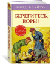

Берегитесь, воры!

Невероятно, но «Секретная семёрка» лишилась одного из своих членов – Джордж по недоразумению выбывает из игры. А тут как раз намечается новое дело, ниточку к которому и дал ребятам Джордж. Неужели, выполняя задание Питера по отработке навыков слежки, он действительно напал на след преступников? И может ли это на первый взгляд бесперспективное расследование стать настоящим приключением?